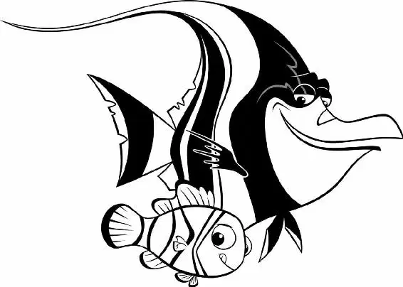

Back in the fish tank, Nemo had been swimming every day with Gill, learning how to use his small injured fin. Already he was swimming faster, more smoothly.
Nemo knew he didn’t have much time. Only two more days. Then Darla would come to take him away.
As Nemo swam past, Gill noticed Nemo’s eyes on his withered fin.
“My first escape,” said Gill grimly. “Landed on dental tools. I was aiming for the toilet.”
“The toilet?” Nemo asked.
“All drains lead to the ocean, kid,” Gill replied.
Nemo thought for a minute and then looked at Gill seriously. He knew he had to do everything he could to help them all escape.
It was finally time for the next step in the plan: jamming the filter so that the tank would get dirty.
The fish gathered by the bubbling filter. “Now, once you get in, you swim down to the bottom of the chamber, and I’ll talk you through the rest,” Gill said to Nemo. It was up to the little fish to stop the machine.
Nemo held his breath and popped his head through the surface. He saw the water wheel.
Then he leaped into the air and onto the wheel. He flapped as the wheel spun, then flipped himself through the gap. He landed in the bottom well of the filter. He was inside!
Gill was right outside the filter. He scooped up a pebble from the bottom of the tank and threw it to Nemo.
“Do you see a small opening?” Gill asked.
Nemo nodded.
“Inside it, you’ll see a rotating rod. Wedge that pebble up against the rod to stop it turning. Careful, Shark Bait.”
Nemo followed Gill’s instructions. After one failed attempt, the whirring noise stopped. The filter was jammed!
“That’s great, kid,” Gill said. “Now go up the tube and out.”
Nemo grinned. He began to swim out of the filter. But the pebble slipped out of place. Whirrrr! The filter started working again!
The giant blade jerked, then turned. It was pulling Nemo back into the filter. In seconds he’d be sucked inside, toward the rotating blade.
“Gill! Help me!” cried Nemo.
Gill raced over to a plastic plant. “Stay calm, kid. Just don’t panic.”
Together, the Tank Gang yanked on the plant. They managed to pull off a branch and shove it into the filter tube.
“Grab hold of this!” Gill called to Nemo. Nemo stretched his fin. Closer, closer… He had it! But he was still about to fall into the sharp, spinning blade!
Gill and the others held on to the branch and pulled—hard.
Nemo was suddenly free. He was outside the filter—safe, but shaken up pretty badly. The little fish began to cry.
“Gill, don’t make him go back in there,” Peach said.
“No. We’re done,” Gill said, unable to look any of the other fish in the eye.
